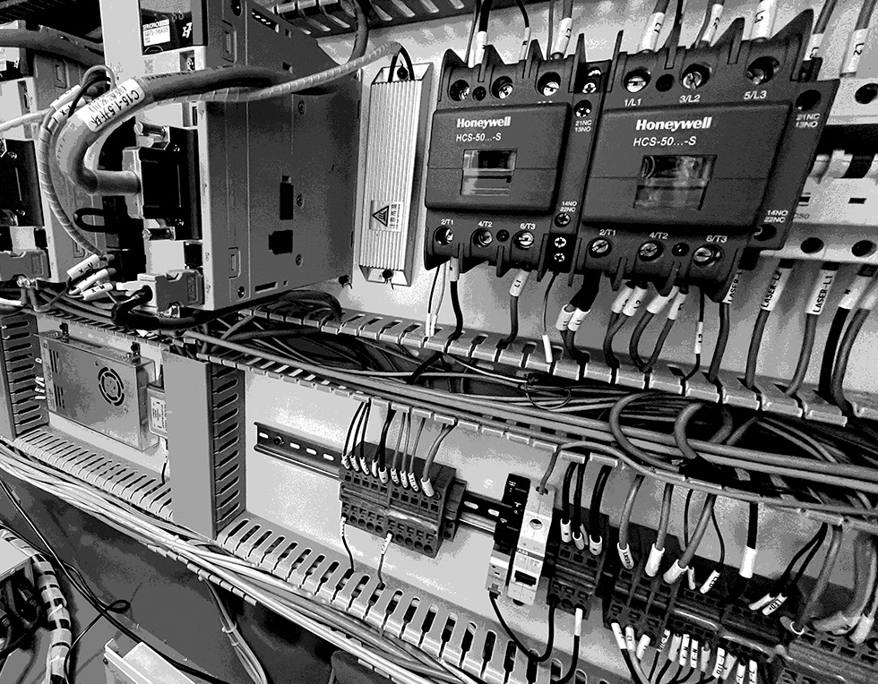
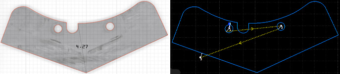

Bubbles
This is one of our good friends, Bubbles, who lives at the foundry and spends the day cutting metal - something she's very talented at! We purchased Bubbles alongside two other laser-powered guys, a welder and a rust cleaner, an eccentric and interesting family. (Should we call them Wubbles and Rubbles?) We thought we'd write about how Bubbles works (as best we can, with our profound lack of scientific insight), describe the sorts of things she excels at, discuss and some of the challenges associated with configuring and maintaining a metal laser cutter.
Components
Bubbles is a complex piece of equipment, an amalgamation of many smaller modules like motors and PLC controllers which together form a unified cutting tool.
- Laser head. The nozzle is, of course, where all the good stuff happens! A laser is fired through a lens, concentrating its energy and piercing the surface of the metal. Its focus is adjustable, allowing for a two-stage cutting action where an intensely concentrated beam is used to push through the metal, and then relaxed while travelling. This lens is soft and must be replaced frequently.
- Gas nozzle. We'd always assumed that the gas somehow provided the nozzle with extra power, and only recently learned that it's actually used to cool the cutting area. Makes a lot of sense: if the cut remained hot, then it would instantly re-weld as it cooled naturally (all that melted metal has to go somewhere). To prevent this the machine blows oxygen onto the operation, or nitrogen if more cooling is required. Bubbles can be very liberal with the nitrogen: we cut 200mm circles into a 1.2m x 1.2m sheet and she'd used half an upright tank of gas by the end of the job!
- BCS100. The height of the nozzle above the metal plays a critical role in determining the strength and character of the beam, and ultimately the quality of the incision. This is handled by Mr. BCS100, an module which will combine your design operations with its own observations about the material being cut to ensure that the height of the nozzle is always correct. Mr. BCS needs to be calibrated when the material is changed, an interesting operation in itself.
- Motors. Haha, funny story about the motors: when we first set up Bubbles we simply couldn't get the nozzle unit to move. The gas was blowing and the laser was firing but there was no travel action. It took a long consulation with an overseas technician to determine that wedges had been placed against the motor for overseas travel - and the casing placed over them so we couldn't see them! Still recovering.
- Computer. For all Bubbles' sophistication she is driven simply by a standard PC which feeds information from a CNC program called Cypcut to all the above modules.
And there are a few other bits and pieces - all the controllers, for instance, which translate the designs given by the computer into instructions the motors can understand, which you can see in the first image. And Bubbles has various ventilation and alarm systems which can halt the machine if something starts to go wrong.
Nice Job, Bubbles!
It took a bit of time to work out what Bubbles could really excel at. She wasn't very economical for small and simple jobs because of the overhead cost; and on the other hand it seemed a waste to use all that precision on high-volume production runs that any conventional CNC machine could be re-tooled to handle.
But soon enough ideal projects began to emerge from the woodwork. A client needed a mechanism which would convert a pivoting rotation into a very specific eccentric motion. We were able to take what he had already developed and use the computer to develop a precise shape that would achieve the motion he wanted. You see, traditional computerised CNC machines use G-codes, shorthand instructions which amount to "move to this point, then make a curve with this angle, and then make a straight line at this point". Now you could make complex shapes using this method but the time cost would be inordinate; driving Bubbles with CAD software cuts out that work while retaining your control and creativity.
Later, some of the fasteners holding our hydraulic press warped out of shape, but we were able to make our own rather than buying expensive replacements by scanning a working piece, tracing it in Illustrator, and having Bubbles track those vector lines! This is where she really thrives, working on strange, intricate, mathematical shapes; and that's what we enjoy too. Thanks, Bubbles!